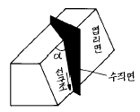
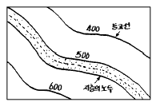
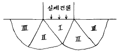
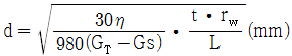
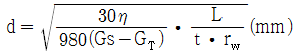
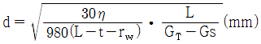
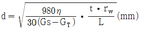

응용지질기사 (2004-08-08 기출문제)
1과목: 암석학 및 광물학
1. 다음 중 황화광물에 속하는 것은?
- 빙정석
- 공작석
- 방연석
- 형석
(정답률: 75%)

2. 비소(As)를 함유한 광물을 개관(open tube)에서 가열했을 때의 특징은?
- 마늘 냄새가 나고 백색승화물이 생긴다.
- 성냥을 그을 때의 냄새가 나고 황색승화물이 생긴다.
- 무색 무취의 반응이 일어난다.
- 냄새는 없고 백색승화물이 생긴다.
(정답률: 86%)
3. 다음 중 분급이 가장 불량한 퇴적암은?
- 석회암
- 이암
- 풍성사암
- 빙성암
(정답률: 90%)
4. 염기성암에서 산성암으로 변함에 따른 설명 중 틀린 것은?
- Na2O + K2O의 증가
- CaO + FeO의 감소
- 유색광물의 함량감소
- SiO2의 감소
(정답률: 55%)
5. 다음 중 형광성을 알 수 있는 기기는?
- 가이거 카운터(geiger counter)
- 미네랄라이트(mineralight)
- 클리노 컴퍼스(clinocompass)
- 알티미터(altimeter)
(정답률: 80%)
6. 광물의 초전기(焦電氣)현상은 다음 중 어떤 힘을 광물에 가했을 때 일어나는가?
- 전기
- 충격
- 압력
- 열
(정답률: 65%)
7. 석영결정이 공명판(진동판)으로 이용되는 것은 다음 어느 성질 때문인가?
- 높은 경도(硬度)
- 패각상 쪼개짐
- 자기적 성질
- 압전기 성질
(정답률: 70%)
8. 하천과 호수가 많이 발달한 지역에 주로 생성되는 퇴적암이 아닌 것은?
- 사암
- 역암
- 이암
- 표석점토암
(정답률: 86%)
9. 다음 중 그레이와케(graywacke)를 설명한 내용으로 틀린 것은?
- 광물 성분이 다양하며 그 근원도 복합적이다.
- 색깔은 보통 회색 내지 녹회색이다.
- 원마도가 낮아 뾰족한 입자들과 점토질 물질로 구성된다.
- 통상 육상퇴적층으로 산화 환경에서 생성되었다.
(정답률: 50%)
10. 소금은 면심 공간격자를 가지고 있다. 소금 결정의 단위포함량(單位胞含量 : unit cell content)은?
- 13
- 8
- 6
- 4
(정답률: 알수없음)
11. 다음에서 가장 고압형의 변성상(metamorphic facies)은?
- 불석상(zeolite facies)
- 녹색편암상(greenschist facies)
- 각섬석상(amphibolite facies)
- 에클로자이트상(eclogite facies)
(정답률: 75%)
12. 다음 중 격자결함(결손격자)고용체로 된 광물은?
- 황철석
- 섬아연석
- 방연석
- 자류철석
(정답률: 알수없음)
13. 다음 중 광물내의 원자배열 상태와 관계가 먼 것은?
- 쪼개짐(Cleavage)
- 굳기(Hardness)
- 결정형(Crystal form)
- 질량(Mass)
(정답률: 86%)
14. 다음 광물 중 비중이 가장 큰 것은?
- 능철석
- 금홍석
- 진사
- 적철석
(정답률: 34%)
15. 화성암을 구성하고 있는 조암광물의 크기(입도)는 주로 무엇에 의하여 결정되는가?
- 마그마의 밀도
- 마그마의 온도
- 마그마의 냉각속도
- 마그마의 화학성분
(정답률: 91%)
16. 다음 중 동력변성작용시 형성되는 변성암은?
- 압쇄암
- 유문암
- 석회암
- 호온펠스
(정답률: 65%)
17. 화성암의 분류 기준이 되기에 가장 부적절한 것은?
- 암석의 산출상태
- 암석의 구성광물
- SiO2의 함량
- 암석의 노옴(norm) 값
(정답률: 89%)
18. 마그마로부터 장석류가 정출하는 일반적인 순서를 빠른 순위로 배열했을 경우 맞는 것은?
- Ca가 많은 사장석 - Na가 많은 사장석 - K장석
- Na가 많은 사장석 - Ca가 많은 사장석 - K장석
- K장석 - Ca가 많은 사장석 - Na가 많은 사장석
- K장석 - Na가 많은 사장석 - Ca가 많은 사장석
(정답률: 64%)
19. 다음 중 고온· 고압의 광역변성작용을 받았음을 지시하는 변성광물은?
- 녹니석
- 규선석
- 십자석
- 석류석
(정답률: 알수없음)
20. 어떤 광물의 분석결과(중량%) Na 32.8%, Al 12.8%, F 54.4% 로 나왔다. 이 광물의 화학식은 어떤 것인가? (단, 각 원소의 원자량은 Na= 23.0, Al= 27.0, F= 19.0)
- Na3AlF6
- NaAlF6
- Na2Al2F3
- Na3Al2F3
(정답률: 77%)
2과목: 구조지질학
21. 돔(Dome)의 정의로 맞는 것은 어느 것인가?
- 중심에서 사방으로 경동하는 향사(Doubly plunging syncline)
- 중심에서 사방으로 경동하는 배사(Doubly plunging anticline)
- 돌출된 지형에서 수평층의 분포를 나타내는 평면도
- 움푹 파여진 지형에서 수평층의 분포를 나타내는 평면도
(정답률: 82%)
22. 해구가 생성되는 판의 경계부는?
- 발산경계
- 수렴경계
- 변환단층경계
- 충돌경계
(정답률: 77%)
23. 부정합면 아래에 층리가 없는 심성암, 변성암 등이 있으면 이런 부정합을 무엇이라 부르는가?
- 사교부정합(Clinounconformity)
- 준정합(Paraconformity)
- 난정합(Nonconformity)
- 비정합(Disconformity)
(정답률: 67%)
24. 수평 습곡축을 가지는 두 습곡에 의해 돔과 분지형태(dome and basin pattern)의 중첩습곡구조가 발생할 수 있는 경우는?
- 중첩된 두 습곡의 습곡축이 평행하고, 두 습곡축면이 모두 수직이다.
- 중첩된 두 습곡의 습곡축이 직각을 이루며 습곡축면이 모두 수직이다.
- 중첩된 두 습곡의 습곡축이 평행하고, 선행습곡 축면은 수평 또한 습곡축면은 수직이다.
- 중첩된 두습곡의 습곡축이 직각을 이루며 선행 습곡축면은 수평 또한 습곡축면은 수직이다.
(정답률: 93%)
25. 다음 중 석회암의 풍화와 침식에 의해 발달하는 지형의 이름은?
- 사행천
- 사주
- 카르스트
- U자곡
(정답률: 92%)
26. 암주(stock)와 같은 양식의 관입체는?
- 저반(batholith)
- 실(sill)
- 암맥(dyke)
- 광맥(vein)
(정답률: 65%)
27. 절리를 기하학적으로 분류할 때 절리의 주향과 층리의 주향이 평행한 절리는 다음 중 어느 것인가?
- oblique joint(diagonal joint)
- dip joint
- columnar joint
- strike joint
(정답률: 47%)
28. 다음 그림의 ∠α 는 어떤 각인가?

- 복각축경사(plunge)각
- 축경사(pitch)각
- 경사(dip)각
- 경향(trend)각
(정답률: 54%)
29. 그림은 지층의 노두를 지형도 상에 나타낸 것이다. 이 지층은?

- 동남방향으로 경사하는 지층이다.
- 수평지층이다.
- 동북방향으로 경사하는 지층이다.
- 수직지층이다.
(정답률: 59%)
30. 다음 절리(joint) 중 지표나 지표 근처의 천부에서 주로 생성되는 절리는?
- 전단절리(shear joint)
- 층상절리(sheeting joint)
- 공액절리(conjugate joint)
- 직교절리(orthogonal joint)
(정답률: 알수없음)
31. 압쇄암(mylonite)과 파쇄암(cataclasite)에 대한 설명 중에서 옳지 않은 것은?
- 단층운동시에 압쇄암은 상대적으로 심부에, 파쇄암은 천부에 위치한다.
- 암석의 물성이 압쇄암은 ductile한 환경에, 파쇄암은 brittle한 환경에 있었다.
- 압쇄암은 접촉변성작용으로 만들어진 접촉변성암이다.
- 일반적으로 지하 5km에서는 압쇄암보다는 파쇄암이 형성될 가능성이 크다.
(정답률: 64%)
32. 한번의 습곡작용만 있었던 것이 확실한 지역의 어느 조사 지점에서 층리 S0의 주향이 N 30° W이고, 40° NE 경사를 갖고 있으며 cleavage면 S1 이 N 30° W 에 20° NE일 경우 다음 설명 중 옳은 것은?
- 조사지점 동측에 향사축이 있는 역전된 익부
- 조사지점 서측에 향사축이 있는 역전된 익부
- 조사지점 서측에 배사축이 있는 정상적 익부
- 조사지점 동측에 향사축이 있는 정상적 익부
(정답률: 53%)
33. 다음 중 동해는 어느 것에 해당되는가?
- 호상열도(Island arc)
- 전호분지(Fore-arc basin)
- 전호해령(Fore-arc ridge)
- 배호분지(Back arc basin)
(정답률: 60%)
34. 다음 중 지진과 가장 관련이 없는 것은?
- 연성변형(ductile deformation)
- 취성변형(brittle deformation)
- 단층작용(faulting)
- 탄성에너지(elastic energy)
(정답률: 알수없음)
35. 대양저 산맥과 변환단층에서 지진과 화산활동이 있는 곳은?
- 변환단층부근의 열곡
- 변환단층이 서로 접하는 모든 곳
- 대양저 산맥부분
- 단층으로 어긋난 대양저 산맥사이의 변환단층
(정답률: 알수없음)
36. 지진과 지진파에 대한 다음 설명 중 맞는 것은?
- 암석의 밀도가 증가하면 지진파의 속도도 증가한다.
- 대륙의 단층을 따라 발생한 지진은 지진해일을 일으킨다.
- 지진파 중 S파의 속도가 가장 느리다.
- 지진해일의 진행속도는 시간당 500km를 넘지 못한다.
(정답률: 86%)
37. 성장 단층(growth fault)에 대한 설명 중 틀린 것은 어느 것인가?
- 퇴적 분지에 나타난다.
- 전형적인 정단층이다.
- 퇴적암의 퇴적과 동시에 움직인다.
- 전단응력(shear stress)의 작용으로 생성된다.
(정답률: 63%)
38. 다음 중 퇴적암의 초생구조(Primary Structure)가 아닌 것은?
- 부딘구조(Boudinage structure)
- 사층리(Cross bedding)
- 하중흔(Load cast)
- 건열(Desiccation crack)
(정답률: 74%)
39. 단층과 절리에 대한 설명으로 옳지 않은 것은?
- 절리란 수축 또는 팽창에 의해 암석중에 생긴 틈을 말한다.
- 절리는 연성변형작용에 의해, 단층은 취성변형작용에 의해 형성된다.
- 단층과 절리 모두 응력조건과 암석의 물성에 따라 결정되는 불연속면이다.
- 단층은 암석내에 발달해 있는 틈이나 단열로서, 이틈의 양 벽의 변위가 최소 5mm 이상이어야 한다.
(정답률: 77%)
40. 사행 하도에서 침식이 가장 많이 일어나는 곳은?
- 굽이의 바깥쪽
- 굽이의 안쪽
- 굽이의 안쪽과 바깥쪽
- 우각호 지역
(정답률: 72%)
3과목: 탐사공학
41. 토양의 무기성분이 산성 부식산의 영향으로 심하게 분해되어 Fe, Al까지도 졸(sol) 상태로 되어 하층으로 이동하는 토양생성과정을 무슨 작용이라고 하나?
- Laterite화 작용
- Podzol화 작용
- Glei화 작용
- 석회화 작용(calcification)
(정답률: 73%)
42. 상부층의 전기비저항 ρ1, 하부층의 전기비저항 ρ2 인 수평 2층구조를 가정할 때, 다음 설명 중 옳은 것은?
- ρ2 ＞ ρ1이면 ρ2 = ρ1 일 때보다 상부층의 전류밀도는 더 작아진다.
- ρ2 ＞ ρ1이면 ρ2 = ρ1 일 때보다 상부층의 전류밀도는 더 커진다.
- ρ2 ＞ ρ1이면 ρ2 = ρ1 일 때와 상부층의 전류밀도는 같다.
- ρ2 ＜ ρ1이면 ρ2 = ρ1 일 때와 상부층의 전류밀도는 같다.
(정답률: 72%)
43. 백분율 주파수 효과(Percent frequency effect)가 사용되는 탐사는?
- S.P 탐사
- I.P 탐사
- 탄성파탐사
- 중력탐사
(정답률: 40%)
44. 배나 항공기를 이용하여 중력탐사를 할 때 빠른 속도 때문에 발생되는 지구 자체의 원심 가속도 변화로 인한 중력의 변화를 보정하는 것은?
- 계기 보정
- 지형 보정
- 부게 보정
- 에트뵈스 보정
(정답률: 93%)
45. 탄성파 주시토모그래피(travel time tomography)의 설명 중 잘못된 것은?
- 송, 수신 시추공 사이의 속도 분포 영상을 제공한다.
- 수신기로는 다중 채널 측정이 가능한 하이드로폰이 주로 사용된다.
- 초동(first arrival)을 발췌하여 역산을 수행한다.
- 자료의 역산은 역투영법(back projection technique)으로 수행된다.
(정답률: 28%)
46. 전기비저항 탐사에서 웨너식 전극배열을 사용하여 전극간격을 15m로 하여 조사하였을 때 전류 0.2A를 보내서 0.6V의 전위차를 얻었다면 외견전기비저항은 얼마인가? (단, 단위는 Ω-m)
- 188.4
- 282.7
- 327.6
- 628.5
(정답률: 알수없음)
47. 다음은 탄성파 발생원이다. 육상탐사용 에너지원이 아닌 것은?
- 바이브로사이스(vibroseis)
- 다이나마이트(dynamite)
- 웨이트드롭(weight-drop)
- 에어건(air-gun)
(정답률: 77%)
48. 다음 중 자력탐사에 가장 적당치 않는 광체는?
- 석탄(coal)
- 자철석(magnetite)
- 안산암(andesite)
- 적철석(hematite)
(정답률: 알수없음)
49. 부게 이상과 모호면에 대한 다음의 설명 중 틀린 것은?
- 모호면은 지각과 맨틀의 사이에 위치한다.
- 고도가 높은 지역에서 부게 이상은 큰 음의 값을 가지며, 모호면은 매우 깊다.
- 저지대 또는 해안에서 부게 이상은 큰 양의 값을 가지며, 모호면은 매우 얕다.
- 모호면에서는 지각 평형을 위한 보상작용이 일어난다.
(정답률: 알수없음)
50. 다음 원소중 산화환경에서 2차 이동도가 가장 큰 것은?
- Zn
- Pb
- Sn
- W
(정답률: 70%)
51. 다음 중 물리검층에서 유정의 검층자료로부터 저류가능 지층을 판별하기 위해 필요한 정보가 아닌 것은?
- 공극률
- 유체포화율
- 투자율
- 전기비저항
(정답률: 알수없음)
52. 중력이상으로부터 잔여중력이상을 구하는 방법이 아닌 것은?
- 평균법
- 표준곡선 이용법
- 2차 미분법
- 다항식 적합법
(정답률: 알수없음)
53. 탄성파가 전파할 때 파는 최단시간 경로를 따라 전파한다는 원리 또는 법칙을 무엇이라 하는가?
- 페르마의 원리
- 호이겐스의 원리
- 스넬의 법칙
- 패러데이 법칙
(정답률: 50%)
54. 지구자기 북극에서 지자기의 복각(inclination)은? (단, I는 복각)
- 0°
- ± 90°
- 0° ＜ I ＜ 90°
- -90° ＜ I ＜ 0°
(정답률: 44%)
55. 현재 석유탐사에 가장 많이 활용되고 있는 탐사방법은?
- 탄성파 굴절에 의한 방법
- 탄성파 반사에 의한 방법
- 지구 자장에 의한 탐사방법
- 지구 중력에 의한 탐사방법
(정답률: 알수없음)
56. 지진파 탐사에서 일직선상에 발파점 0를 설치하고 이 점에서 수진기 a점까지의 거리가 3000m, 수진기 b점까지의 거리가 6000m였다. 그리고 탄성파의 주시 T1 = 0.5sec, T2 = 1 sec(각각 a점 b점에서)였다면 이 지역의 지표의 암석 평균속도는?
- 3000 m/sec
- 30000 m/sec
- 60000 m/sec
- 6000 m/sec
(정답률: 알수없음)
57. 시료의 정량분석 중 X선 형광분석법에 대한 설명으로 잘못된 것은?
- 1차 X선에 의해 방사되는 2차 X선의 분광을 이용한다.
- 시료를 분말가압성형법과 용융법으로 제조하여 고체나 액체 시료 모두를 분석할 수 있다.
- 다원소 분석이 가능하며, 정밀도가 높다.
- Mg, Al, Si 등에 대한 최저측정한계와 측정오차가 적어 미량분석도 가능하다.
(정답률: 64%)
58. 방사능 광물의 gas탐사에 가장 적합한 원소는?
- Uranium
- Thorium
- Radon
- Potassium
(정답률: 알수없음)
59. 탄성파 탐사에서 일반적으로 사용하는 전자식 수진기(electromagnetic geophone)에 있어서 출력 전압은 다음 중 무엇에 비례하는가?
- 가속도(acceleration)
- 속도(velocity)
- 변위(displacement)
- 변위 포텐샬(displacement potential)
(정답률: 알수없음)
60. 주파수영역 전자탐사에 대한 설명으로서 옳은 것은 어느 것인가?
- 심부 탐사를 위해서는 고주파수를 사용한다.
- 침투심도는 주파수의 제곱근에 반비례한다.
- 전기비저항이 높을수록 가탐심도는 낮다.
- 일반적인 전자탐사는 100 kHz 이상의 주파수를 사용한다.
(정답률: 67%)
4과목: 지질공학
61. 투수시험 원통의 안지름이 10㎝, 높이 15㎝인 몰드에 흙시료를 넣고 투수시험을 실시하였다. 수위차는 20㎝이었고, 10분간 투수량을 측정하였더니 540㎝3이었다. 이 때의 투수계수는 ?
- 1.50 × 10-2㎝/s
- 2.85 × 10-2㎝/s
- 5.87 × 10-4㎝/s
- 8.59 × 10-3㎝/s
(정답률: 39%)
62. 다음은 Q시스템에 의한 분류에서 RQD가 5%, 절리군의 계수 Jn=15, 절리의 거칠기 계수 Jr=1.5, 절리의 변질 계수, Ja=1.0, 지하수에 의한 저감계수 Jw=1.0, 응력저감계수 SRF=2.0 일 때 Q 값은?
- 0.22
- 0.25
- 0.5
- 1.0
(정답률: 알수없음)
63. 물의 모세관 현상에서 모세관 상승높이와 서로 비례하는 것은 어느 것인가?
- 관경
- 물의 밀도
- 표면장력
- 물의 온도
(정답률: 92%)
64. 다음은 자유면 대수층과 피압면 대수층에 대한 설명이다. 가장 적합한 것은?
- 자유면 대수층은 대기압보다 더 큰 압력이 대수층의 공극내에 일어난다.
- 자유면 대수층의 저류계수는 보통 0.00001 ~ 0.001 정도이다.
- 피압 대수층은 대수층의 상부와 하부에 불투수층이 있는 경우이다.
- 피압 대수층에 설치한 우물의 영향 반경은 자유면 대수층에 설치한 우물의 영향 반경보다 작다.
(정답률: 75%)
65. 지형의 특성에 따라 충적층을 다음과 같이 구분할 때 일반적으로 충적층의 두께가 가장 두꺼운 지층은?
- 선상지
- 해안평야
- 범람원
- 곡간평야
(정답률: 59%)
66. 유선망(flow net)의 특성 중 잘못된 것은?
- 인접한 2개의 유선 사이를 흐르는 침투수량은 서로 같다.
- 투수속도 및 수두경사는 유선망의 폭에 비례한다.
- 인접한 2개의 등수두선 사이의 손실수두는 서로 같다.
- 흙이 균질할 때 흙속의 침투수는 수두경사가 가장 급한 방향으로 흐른다.
(정답률: 75%)
67. 다음 중 현지암반의 변형계수를 측정할 수 있는 시험방법이 아닌 것은?
- 수실시험
- 평판재하시험
- 수압파쇄시험
- 공내재하시험
(정답률: 65%)
68. 다음 중 기계적 풍화작용은?
- 수화작용
- 용해탈수작용
- 쐐기작용
- 환원작용
(정답률: 92%)
69. 암석이나 콘크리이트의 실용시험중 경도측정과 거리가 먼 시험은 어느 것인가?
- 쇼어(Shore)의 반발시험
- 슈미트 해머(Schmidt Hammer) 타격시험
- 알큐디(R.Q.D) 시험
- 모스(Mohs)의 경도시험
(정답률: 알수없음)
70. 연약점토 지반에서 시행된 표준관입시험 결과 얻은 N값이 4 였다. 점토지반의 일축압축강도는?
- 0.25㎏/㎝2
- 0.5㎏/㎝2
- 1.0㎏/㎝2
- 2.0㎏/㎝2
(정답률: 60%)
71. 다음 그림은 직접 기초의 Failure 상태를 나타낸 그림이다. 다음 중 radial shear failure zone을 나타낸 것은 어느 것인가?

- I zone
- II zone
- Ⅲ zone
- Ⅰ, Ⅱ, Ⅲ zone
(정답률: 알수없음)
72. 건조하여 점착력이 없고 내부 마찰각이 26.6° 인 무한사면의 경사가 45° 일 때 안전율(Safety Factor)은 얼마인가?
- 0.5
- 1.0
- 3.0
- 9.0
(정답률: 알수없음)
73. 흙의 입도시험방법에서 현탁되어있는 입자의 최대지름을 구하는 식이 바르게 된 것은? (단, η : 물의 점성계수(poise), L : 비중계의 유효깊이(㎝), Gs : 흙 입자의 비중, GT : T℃의 물의 비중, t : 침강시간 (S), rw : 물의 단위체적 중량(g/㎝3))




(정답률: 40%)
74. 산사태의 발생요인 중 직접적으로 작용하지 않는 것은?
- 지질구조
- 암석의 압축강도
- 강우
- 지진
(정답률: 59%)
75. 무게 10,200g의 용기에 흙시료를 담고 그 전체의 무게를 측정하니 16,550g이었다. 이를 로(爐)에 건조한 다음 측정하니 14,340g이었다. 흙시료의 함수비는 얼마인가?
- 63.38 %
- 53.38 %
- 50.20 %
- 45.20 %
(정답률: 70%)
76. 다음 설명 중 틀린 것은?
- 소성지수가 큰 흙일수록 공학적인 문제점을 유발할 가능성이 높다.
- 흙 입자가 세립일수록 소성지수는 증가하게된다.
- 어떤 흙이 소성상태에 있다면 액성지수는 1보다 크게 된다.
- 소성지수는 흙이 소성상태로 존재할 수 있는 함수비의 범위를 나타낸다.
(정답률: 62%)
77. 콘크리트의 시공에 있어서 시멘트의 사용량을 절약하려면 골재에 대하여 다음 중 어느 것을 특히 고려하여야 하는가?
- 중량
- 내구성
- 입도
- 밀도
(정답률: 알수없음)
78. 지반침하가 발생하는 범위를 하부 공동과 지표면과의 거리관계를 이용하여 각도로 나타낸 것은?
- Angle of tension
- Angle of draw
- Angle of azimuth
- Angle of dip
(정답률: 46%)
79. 표준관입시험(S.P.T)에서 N값을 올바르게 표시한 것은?
- 63.5[㎏]의 햄머를 75[㎝]에서 자유 낙하시켜 Split spoon sampler가 30[㎝] 들어갈 때 타격수
- 35[㎏]의 햄머를 75[cm]에서 자유 낙하시켜 Split spoon sampler가 30[㎝] 들어갈 때 타격수
- 63.5[㎏]의 햄머를 81[cm]에서 자유 낙하시켜 Split spoon sampler가 30[㎝] 들어갈 때 타격수
- 35[㎏]의 햄머를 낙하하고 30[cm]에서 자유 낙하시켜 Split spoon sampler가 30[㎝] 들어갈 때 타격수
(정답률: 70%)
80. 석회암의 풍화에 따른 공동의 함몰로 생긴 침하형태는?
- 차별침식
- 트러스트단층
- 토플링
- 용식 함몰지
(정답률: 64%)
5과목: 광상학
81. 국내 활석광상 중 일반적으로 양질의 활석을 생산하는 광상의 모암은?
- 녹니석편암
- 돌로마이트
- 사문암
- 석회암
(정답률: 59%)
82. 작은 광맥들이 서로 교차하면서 그물 모양으로 얽혀있는 광맥은?
- 단성 광맥
- 복성 광맥
- 망상 광맥
- 수지상 광맥
(정답률: 알수없음)
83. 우리나라에서 함티탄 자철광석이 산출되는 광상은?
- 강원도 홍천군 자은철광상
- 경기도 강화군 소연평도 철광상
- 강원도 양양군 양양 철광상
- 충북 충주 철광상
(정답률: 알수없음)
84. 철광상중에서 가장 큰 규모를 이루는 광상의 유형은 어느 것인가?
- 열수광상
- 접촉광상
- 퇴적광상
- 정마그마광상
(정답률: 59%)
85. 지사의 시간적 구분 단위로서 석탄기(紀)는 어느 대(代)에 속하는가?
- 시생대
- 원생대
- 고생대
- 중생대
(정답률: 알수없음)
86. 고산(gossan)과 가장 관계 깊은 광상은?
- 반암동광상
- 풍화잔류광상
- 표성부화광상
- 접촉교대광상
(정답률: 40%)
87. 광물의 침전온도와 압력 및 광화유체의 화학적 특성에 대한 정보를 제공하는 것은?
- 광물의 조직과 결정형
- 안정동위원소
- 용융점
- 유체포유물
(정답률: 80%)
88. 다음 중 대륙지각 내부 즉, 판구조론적으로 상대적 안정상태의 지각에 분포하는 광상의 형태는?
- 화산성 괴상 황화물광상
- 구로코형 광상
- 반암 동광상
- 호상 철광상
(정답률: 80%)
89. 사광상(砂鑛床)에서 산출되는 중요 광물이 아닌 것은?
- 은(銀)
- 저어콘(Zircon)
- 티탄철석(ilmenite)
- 모나자이트(Monazite)
(정답률: 70%)
90. 갈탄이 무연탄으로 변화되는 과정에 수반되는 변화로서 맞지 않는 것은?
- 수분의 감소
- 고정탄소의 증가
- 비중의 증가
- 휘발성분의 증가
(정답률: 알수없음)
91. 우리나라는 고령토광상이 하동-산청-합천 지역에 풍부하게 부존하고 있다. 어떤 유형의 광상이 가장 우세하게 분포하고 있는가?
- 열수변질광상
- 접촉교대광상
- 변성광상
- 풍화잔류광상
(정답률: 63%)
92. 다음 중 광상의 성인해석을 위하여 행해지는 안정동위원소가 아닌 것은?
- 수소
- 질소
- 황
- 탄소
(정답률: 42%)
93. 그라이젠화작용과 가장 관계가 깊은 암석은?
- 화강암
- 사암
- 점판암
- 석회암
(정답률: 82%)
94. 다음 중 퇴적광상의 특징이 아닌 것은?
- 층상(성층)광체로 흔히 산출된다.
- 화석을 포함하기도 한다.
- 대체로 광상규모가 크며 모암의 층리와 정합적이다.
- 맥상광맥이 흔히 관찰된다.
(정답률: 70%)
95. 견운모를 가장 많이 형성하는 모암변질작용은?
- 칼륨변질작용
- 필릭변질작용
- 이질변질작용
- 강이질변질작용
(정답률: 64%)
96. 우리나라 천열수 금은광상의 특징은?
- 광화시기가 주로 쥬라기이다.
- 단순한 괴상석영맥의 형태이다.
- 수반되는 황화광물이 다양하고 양도 많다.
- 산출되는 금광물은 자연금에 가까운 조성을 보여준다
(정답률: 알수없음)
97. 한국 동광상구(Cu-metallogenic province)의 대표적인 지역은?(오류 신고가 접수된 문제입니다. 반드시 정답과 해설을 확인하시기 바랍니다.)
- 태백산지역
- 공주지역
- 경남지역
- 제주도지역
(정답률: 47%)
98. 후생(epigenetic)광상에서 광화작용이전에 모암이 광화유체에 대하여 더욱 반응이 용이하고 수용적으로 변화하는 작용은?
- 광역변성작용
- 광화준비작용
- 변질작용
- 분별작용
(정답률: 77%)
99. 원유를 가장 많이 생산하고 있는 트랩은?
- 돔형 트랩
- 단층형 트랩
- 배사형 트랩
- 부정합형 트랩
(정답률: 알수없음)
100. 평안계의 사동통 지층에 관한 설명중 틀린 것은?
- 우리나라의 중요한 함탄층이다.
- 선캄브리아기에 퇴적된 지층이다.
- 하부에는 해성층, 위로는 육성층이다.
- 남한에서는 강원도에 가장 넓게 분포한다.
(정답률: 60%)